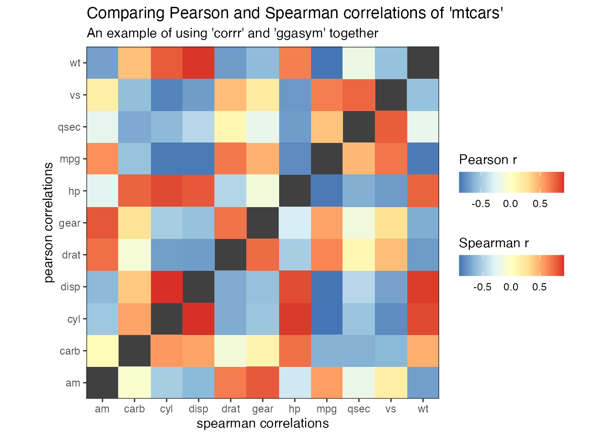

Using ‘ggasym’ with ‘corrr’ for Studying Correlations
Joshua H. Cook
2020-05-29
Source:vignettes/ggasym-corrr.Rmd
ggasym-corrr.RmdPurpose
The ‘corrr’ package is designed to make exploring correlations easy in the tidyverse. Instead of switching from handling tidy data in a tibble to making correlation in a matrix and then reshaping the results into a tibble for ‘ggplot2’, ‘corrr’ makes it simple to calculate the correlations between all columns of a tibble in a single pipeline.
As calculate correlations will naturally result in a square matrix, I figured there must be a use case for ‘ggasym’ with ‘corrr’. Here, I demonstrate how to compare the results of two different correlation methods in one plot.
Preparing data with ‘corrr’
I used the mtcars from ‘datasets’ for this example.
head(mtcars) #> mpg cyl disp hp drat wt qsec vs am gear carb #> Mazda RX4 21.0 6 160 110 3.90 2.620 16.46 0 1 4 4 #> Mazda RX4 Wag 21.0 6 160 110 3.90 2.875 17.02 0 1 4 4 #> Datsun 710 22.8 4 108 93 3.85 2.320 18.61 1 1 4 1 #> Hornet 4 Drive 21.4 6 258 110 3.08 3.215 19.44 1 0 3 1 #> Hornet Sportabout 18.7 8 360 175 3.15 3.440 17.02 0 0 3 2 #> Valiant 18.1 6 225 105 2.76 3.460 20.22 1 0 3 1
My goal is to compare the values of correlations between each column when using either the Pearson or Spearman method (parametric and nonparametric methods, respectively, for calculating correlations). Thus, I use the ‘corrr’ pipeline to get the upper triangle (lower would work, too) of the correlation matrix when using either method = "pearson" or method = "spearman". The pipeline works as follows:
-
correlate(): calculate the correlation values -
shave(): get the upper triangle of the correlation matrix -
stretch(): change from a matrix to a tidy format -
na.omit(): remove rows withNAvalues -
rename(): change the column name to distinguish between the two correlations
More information can be found in the “Using corrr” vignette.
# Pearson correlation pear <- corrr::correlate(mtcars, method = "pearson", quiet= TRUE) %>% corrr::shave(upper = TRUE) %>% corrr::stretch() %>% stats::na.omit() %>% dplyr::rename(pearson_r = "r") # Spearman correlation spear <- corrr::correlate(mtcars, method = "spearman", quiet= TRUE) %>% corrr::shave(upper = TRUE) %>% corrr::stretch() %>% stats::na.omit() %>% dplyr::rename(spearman_r = "r")
Joining the two resultant tibbles is easy using full_join from ‘dplyr’. The last preparation step is to asymmetrise() the tibble (in this case it only adds NA values to the diagonal).
df <- dplyr::full_join(pear, spear, by = c("x", "y")) %>% ggasym::asymmetrise(x, y)
Plotting with ‘ggasym’
Finally, everything is ready to plot using ggasym::geom_asymmat(). Here is the bare-bones version:
ggplot(df) + geom_asymmat(aes(x = x, y = y, fill_tl = pearson_r, fill_br = spearman_r)) + scale_fill_tl_distiller(type = "div", palette = "RdYlBu") + scale_fill_br_distiller(type = "div", palette = "RdYlBu")

But the addition of more ‘ggplot2’ modifications makes it look much better!
ggplot(df) + geom_asymmat(aes(x = x, y = y, fill_tl = pearson_r, fill_br = spearman_r)) + scale_fill_tl_distiller(type = "div", palette = "RdYlBu", na.value = "grey90", guide = guide_colourbar(direction = "horizontal", order = 1, title.position = "top")) + scale_fill_br_distiller(type = "div", palette = "RdYlBu", na.value = "grey90", guide = guide_colourbar(direction = "horizontal", order = 2, title.position = "top")) + theme_bw() + theme(panel.background = element_rect(fill = "grey25"), panel.grid = element_blank()) + scale_x_discrete(expand = c(0, 0)) + scale_y_discrete(expand = c(0, 0)) + coord_equal() + labs(x = "spearman correlations", y = "pearson correlations", title = "Comparing Pearson and Spearman correlations of 'mtcars'", subtitle = "An example of using 'corrr' and 'ggasym' together", fill_tl = "Pearson r", fill_br = "Spearman r")

There are no massive differences in this case, though some slight variability can be seen in the values of “carb” and “mpg,” “qsec,” and “vs.”
If you want to include values along the diagonal, you can add them explicitly by making a new tibble with columns x and y equal to each other and values in a new column. Use dplyr::bind_rows() to add this to the joined tibble before passing to asymmetrise().